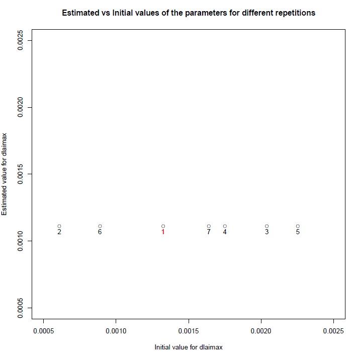
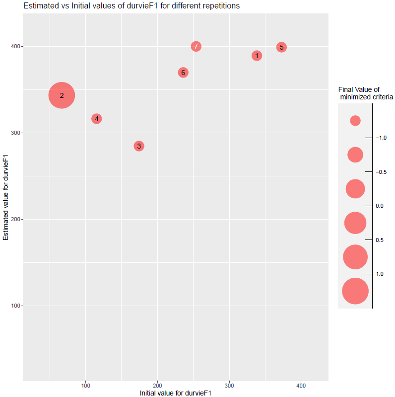
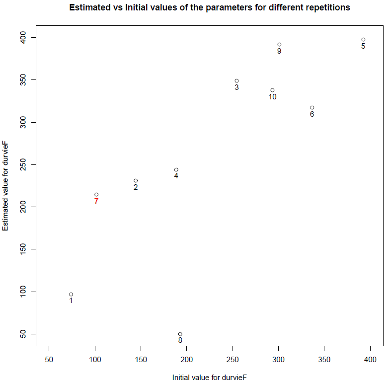

vignettes/Parameter_estimation_Specific_and_Varietal.Rmd
Parameter_estimation_Specific_and_Varietal.RmdThis document presents an example of a simultaneous estimation of one specific and one varietal parameter on a multi-varietal dataset using the Stics model, while a simpler introductory example is presented in this vignette (you should look at it first).
Data comes from a maize crop experiment (see description in Wallach et al., 2011). In this example, 8 situations (USMs in Stics language) will be used for the parameter estimation. This test case correspond to case 1c in (Wallach et al., 2011).
The parameter estimation is performed using the Nelder-Meade simplex method implemented in the nloptr package.
This part is not shown here, it is the same as this of the introductory example.
In this example, observed LAI are used for all USMs for which there is an observation file in file.path(data_dir,"XmlFiles") folder.
# Read observation files
obs_list=get_obs(file.path(data_dir,"XmlFiles"))
obs_list=filter_obs(obs_list, var_names=c("lai_n"),include=TRUE)param_info allows handling specific / varietal parameters (dlaimax vs durvieF parameters in this example): dlaimax is defined to take the same value for all situations, whereas durvieF is defined in such a way that it may take one value for situations c("bo96iN+", "lu96iN+", "lu96iN6", "lu97iN+"), that correspond to a given variety, and another for situations c("bou99t3", "bou00t3", "bou99t1", "bou00t1"), that correspond to another variety, sit_list being in this case a list of size 2 (see code below). Please note that bounds can take different values for the different groups of situations (lb and ub are vectors of size 2 for durvieF).
param_info=list()
param_info$dlaimax=list(sit_list=list(c("bou99t3", "bou00t3", "bou99t1", "bou00t1", "bo96iN+", "lu96iN+", "lu96iN6", "lu97iN+")),lb=0.0005,ub=0.0025)
param_info$durvieF=list(sit_list=list(c("bo96iN+", "lu96iN+", "lu96iN6", "lu97iN+"), c("bou99t3", "bou00t3", "bou99t1", "bou00t1")),lb=c(50,100),ub=c(400,450))optim_options=list()
optim_options$nb_rep <- 7 # Number of repetitions of the minimization
# (each time starting with different initial
# values for the estimated parameters)
optim_options$maxeval <- 1000 # Maximum number of evaluations of the
# minimized criteria
optim_options$xtol_rel <- 1e-04 # Tolerance criterion between two iterations
# (threshold for the relative difference of
# parameter values between the 2 previous
# iterations)
optim_options$path_results <- data_dir # path where to store the results (graph and Rdata)
optim_options$ranseed <- 1234 # random seed The Nelder-Meade simplex is the default method => no need to set the optim_method argument. For the moment it is the only method interfaced (others will come soon). Same for crit_function: a value is set by default (crit_log_cwss, see ? crit_log_cwss for more details and list of available criteria). Others will be proposed in next versions of CroptimizR. The user can implement and give in argument its own criterion (see inputs and outputs required in the crit_log_cwss function).
optim_results=estim_param(obs_list=obs_list,
model_function=stics_wrapper,
model_options=model_options,
optim_options=optim_options,
param_info=param_info)The results printed in output on the R console are the following:
## [1] "Estimated value for dlaimax : 0.00112078439658861"
## [1] "Estimated value for durvieF1 : 400"
## [1] "Estimated value for durvieF2 : 213.495265823847"
## [1] "Minimum value of the criterion: -1.48441926984469"Complementary graphs and data are stored in the optim_options$path_results folder. Among them, the EstimatedVSinit.pdf file contains the following figures:

Figure 1: plots of estimated vs initial values of parameters dlaimax and durvieF (estimated for both varieties).
A couple of plots to check if the calibration reduced the difference between simulations and observations.
# Install a few packages needed for the following
if(!require("gridExtra")){
install.packages("gridExtra",repos="http://cran.irsn.fr")
library("gridExtra")
}
if(!require("hydroGOF")){
install.packages("hydroGOF",repos="http://cran.irsn.fr")
library("hydroGOF")
}
if(!require("grid")){
install.packages("grid",repos="http://cran.irsn.fr")
library("grid")
}
if(!require("dplyr")){
install.packages("dplyr",repos="http://cran.irsn.fr")
library("dplyr")
}
if(!require("ggplot2")){
install.packages("ggplot2",repos="http://cran.irsn.fr")
library("ggplot2")
}
# Run the model without and with forcing the optimized values of the parameters
sim_before_optim=stics_wrapper(model_options=model_options)
sim_after_optim=stics_wrapper(param_values=optim_results$final_values,
model_options=model_options)
# transform into data.frame and intersect for using ggplot2
sim_before_df = bind_rows(sim_before_optim$sim_list[[1]],.id = 'Situation')
sim_after_df = bind_rows(sim_after_optim$sim_list[[1]],.id = 'Situation')
obs_df = bind_rows(obs_list,.id = 'Situation')
sim_before_df = rename(sim_before_df,LAI_sim=lai_n)
sim_after_df = rename(sim_after_df,LAI_sim=lai_n)
obs_df = rename(obs_df,LAI_obs=lai_n)
sim_before_obs_df = merge.data.frame(sim_before_df,obs_df,by = c('Situation','Date'), all.x = TRUE)
sim_after_obs_df = merge.data.frame(sim_after_df,obs_df,by = c('Situation','Date'), all.x = TRUE)
# Compute RMSE
rmse_before = rmse(sim_before_obs_df$LAI_obs,sim_before_obs_df$LAI_sim)
rmse_after = rmse(sim_after_obs_df$LAI_obs,sim_after_obs_df$LAI_sim)
# Plot the graphs
max_LAI_sim=max(c(sim_before_obs_df$LAI_sim,sim_after_obs_df$LAI_sim,na.rm=TRUE),na.rm=TRUE)
max_LAI_obs=max(sim_before_obs_df$LAI_obs,na.rm=TRUE)
p1=ggplot(sim_before_obs_df, aes(x = LAI_obs, y = LAI_sim)) +
geom_point(shape=21, size = 3, color = 'blue',
fill="white",alpha = 0.8,stroke = 1) +
theme(text = element_text(size=16)) +
theme(aspect.ratio=1) +
labs(x = "Observed LAI", y = "Simulated LAI") +
geom_abline(intercept = 0, slope = 1, size = 0.5, color = "blue") +
xlim(0,max_LAI_obs) + ylim(0,max_LAI_sim) +
ggtitle(paste("Before optimization \n RMSE=",round(rmse_before,2))) +
theme(plot.title = element_text(hjust = 0.5))
p2=ggplot(sim_after_obs_df, aes(x = LAI_obs, y = LAI_sim)) +
geom_point(shape=21, size = 3, color = 'blue',
fill="white",alpha = 0.8,stroke = 1) +
theme(text = element_text(size=16)) +
theme(aspect.ratio=1) +
labs(x = "Observed LAI", y = "Simulated LAI") +
geom_abline(intercept = 0, slope = 1, size = 0.5, color = "blue") +
xlim(0,max_LAI_obs) + ylim(0,max_LAI_sim) +
ggtitle(paste("After optimization \n RMSE=",round(rmse_after,2))) +
theme(plot.title = element_text(hjust = 0.5))
p=grid.arrange(grobs=list(p1,p2), nrow=1, ncol=2)
# Save the graph
ggsave(file.path(optim_options$path_results,
paste0("sim_obs",".png")), plot=p)This gives:
Figure 2: plots of simulated vs observed LAI before and after optimization. The gap between simulated and observed values has been drastically reduced: the minimizer has done its job!